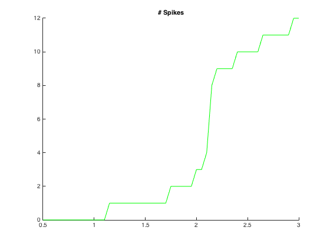

This directory includes NEURON and MATLAB files to generate figure 3 and supplementary figures S3 and S4 of the paper: "Opposing effects on NaV1.2 function underlie differences between SCN2A variants observed in individuals with autism spectrum disorder or infantile seizures". Biological Psychiatry (2017) DOI: http://dx.doi.org/10.1016/j.biopsych.2017.01.009 This model is based on the model that accompanied the paper "State and location dependence of action potential metabolic cost (Hallermann et al., 2012)" model. (model=144526 at ModelDB) The root directory includes 2 sub-folders, "ActInact" includes the VClamp simulations (Figure S3). And "Excitability" includes the single neuron simulations. VCalmp - "ActInact" folder This folder holds the different .mod files for the Nav1.2 variantns and Nav1.6 (nax). These mod files are variations on the original ones which were published at: "Fast sodium channel gating supports localized and efficient" Schmidt-Hieber C, Bischofberger J. (2010) (see 144526 at ModelDB) To run VClamp simulations: compile the .mod files In sodiumTrialsNa.hoc replace occurences of "na" with the suffix at the .mod file e.g. nad82g at lines: 17,18,176,178. After generating the recording files using sodiumTrialsNa.hoc you can use the matlab script VClamp.m to create figure s3. Single neuron models - "Excitability" folder This folder holds subfolders for each condition that we ran in fig 3 and S4. How to run simulations: (see https://senselab.med.yale.edu/ModelDB/NEURON_DwnldGuide.html for more detailed help) change directory to Excitability/AdultD12N/ Compile .mod files run mosinit.hoc Wait for it to load in the terminal run: runSCN2A() which will run all the simulations neccessary for that condition, and will generate output (Vms) .csv files. Then run the matlab script YoungModel.m or AdultModel.m to plot the figures from the data produced by the NEURON simulations. For this example cut and paste the matlab commands in AdultModel.m that contain AdultD12N to generate this trace which is similar to the D12N trace in Fig3A (change the paths with "\"s (windows) to "/"s if on unix or mac).  Please refer any questions to: Roy Ben-Shalom bens.roy at gmail.com